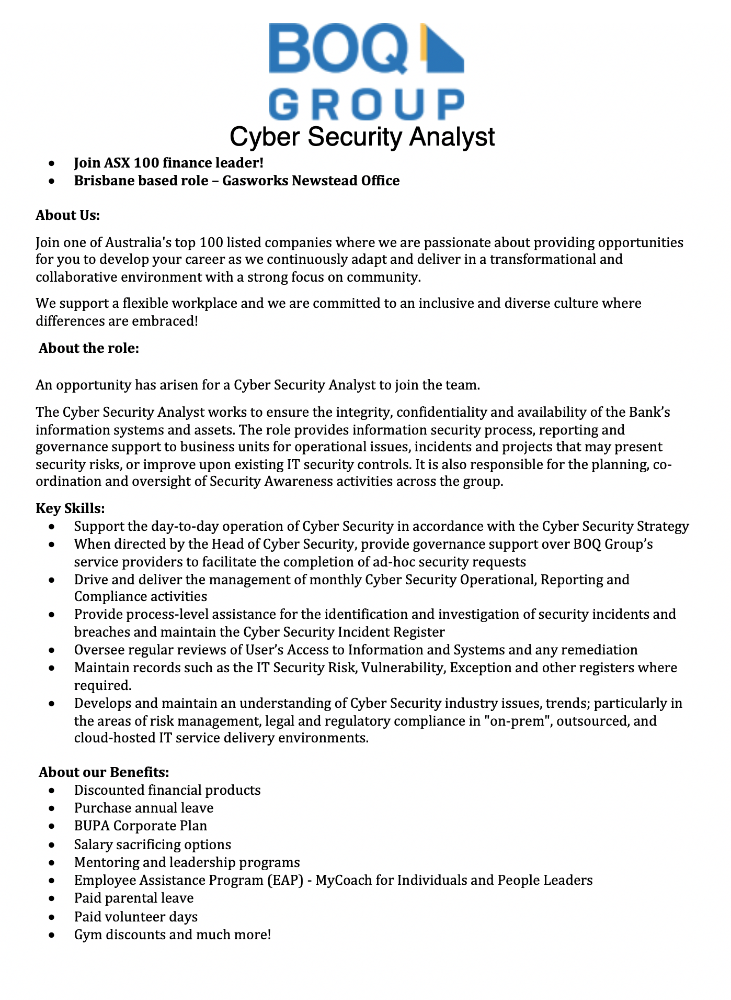

Ideal Job
 Cyber Security AnalystTo me, the role sounds like I would be the security point of contact for the entire business. Whether someone is looking at implementing a new product change and I would have to assess the security risk involved with its implementation or if there were security incidents which needed to be investigated, I would be the person responsible for running the reports. I like the idea of investigating security incidents, I’m a bit of a busy body when it comes to wanting to know things, so I think I would be perfect for that aspect of the role.
The job advertisement is exceptionally vague when it comes to the formal qualification requirements of the role but basically if my skill set has been sharpened enough by my previous roles and I seem like a good fit for the team, then I’m in! It’s probably going to be a long journey for me to gather enough experience to be able to fulfil the skill requirements of the role, as I’ve had experience in an IT environment but nothing to do with cyber security. I’ve worked in two Service Desks, one for a software company and one for the Department of Defence, and while I’d had to deal with basic security procedures I’m nowhere near ready to take on a role like this.
In order to prepare for a role like this, I would first need to finish this Batchelor of IT, possibly look into doing post graduate studies relating to cyber security, as well as gain the necessary experience working my way up through IT companies.